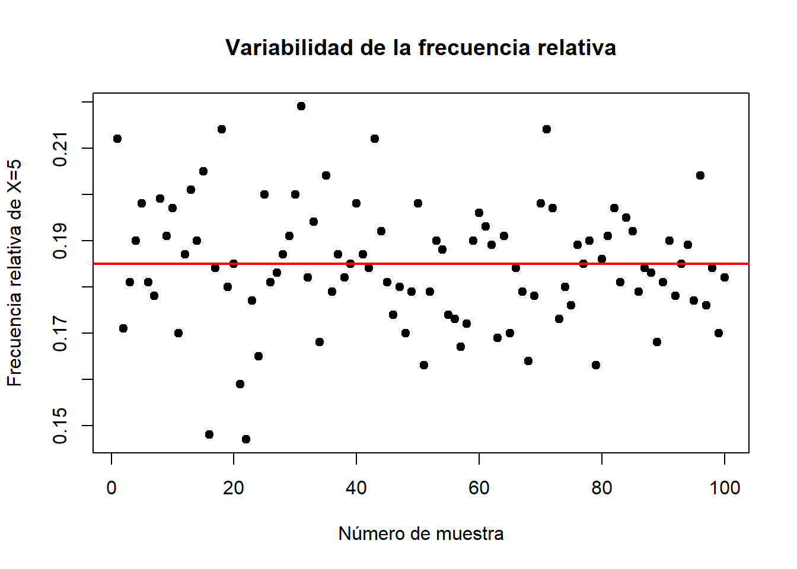
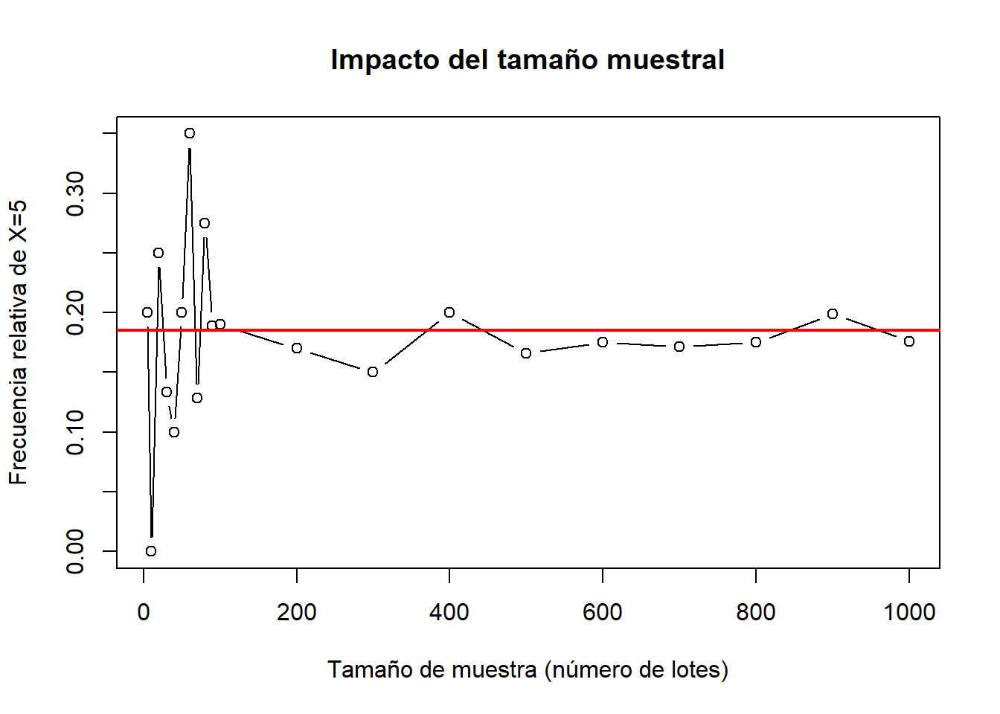
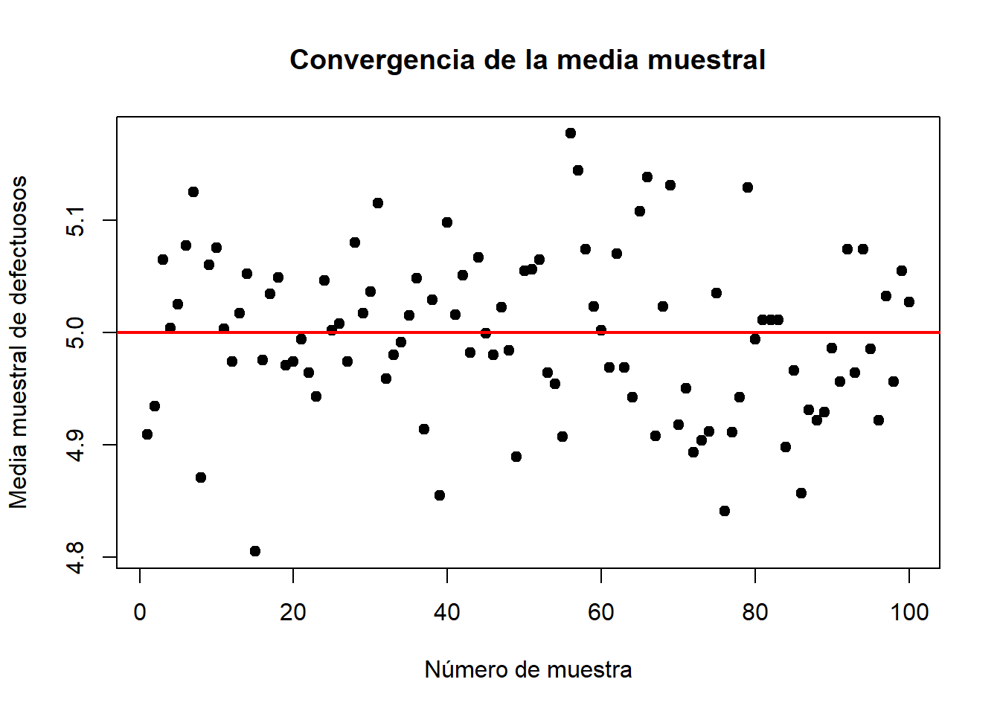
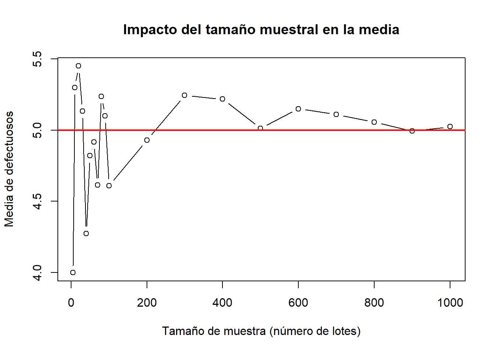

Una fábrica de dispositivos electrónicos realiza pruebas de calidad a cada lote de producción. Se sabe que, en promedio, el 10% de los productos presentan defectos. Suponiendo que la cantidad de productos defectuosos en un lote sigue una distribución Binomial, se realizarán varios análisis de simulación.
Cada lote contiene 50 productos.
Cada producto puede estar defectuoso (\(X=1\)) o no defectuoso (\(X=0\)).
La probabilidad de que un producto sea defectuoso es \(p = 0.10\).
Si se selecciona un lote de 50 productos, el número de productos defectuosos sigue una distribución binomial: \[ X \sim Bin(50, 0.10) \]
donde \(X\) representa la cantidad de productos defectuosos en un lote de 50 productos.
Realiza el siguiente experimento computacional:
La función de probabilidad de la distribución Binomial se define como:
\[ P(X = k) = \binom{n}{k} p^k (1 - p)^{n - k} \]
donde:
\(n = 50\) es el número total de ensayos (productos en un lote).
\(k = 5\) es el número de éxitos (productos defectuosos).
\(p = 0.10\) es la probabilidad de éxito (que un producto sea defectuoso).
\(\binom{n}{k}\) es el coeficiente binomial, que se calcula como:
\[ \binom{n}{k} = \frac{n!}{k!(n-k)!} \]
Ahora, reemplazamos los valores en la fórmula. Primero se calcula el coeficiente binomial:
bin_coeff <- choose(50, 5) bin_coeff
bin_coeff <- choose(50, 5)
bin_coeffprob_x_5 <- bin_coeff * (0.10^5) * (0.90^(50 - 5)) prob_x_5
prob_x_5 <- bin_coeff * (0.10^5) * (0.90^(50 - 5))
prob_x_5size <- 50 # Tamaño del lote prob <- 0.10 # Probabilidad de defecto x <- 5 # Número de defectuosos p_x5 <- dbinom(x, size, prob) p_x5
size <- 50 # Tamaño del lote
prob <- 0.10 # Probabilidad de defecto
x <- 5 # Número de defectuosos
p_x5 <- dbinom(x, size, prob)
p_x5## [1] 0.1849246La probabilidad de que 5 dispositivos sean defectuosos en un lote de 50 dispositivos es 0.1849. En términos prácticos, esto significa que, si se selecciona un gran número de lotes de 50 dispositivos (por ejemplo 1000 lotes), aproximadamente el 18.5% de esos lotes contendrán exactamente 5 dispositivos defectuosos.
Usando los códigos siguientes se obtiene la frecuencia relativa:
set.seed(123) n <- 1000 # Número de lotes sim_data <- rbinom(n, size, prob) # Frecuencia relativa de X = 5 f_x5 <- sum(sim_data == x) / n f_x5
set.seed(123)
n <- 1000 # Número de lotes
sim_data <- rbinom(n, size, prob)
# Frecuencia relativa de X = 5
f_x5 <- sum(sim_data == x) / n
f_x5## [1] 0.173La frecuencia relativa obtenida es 0.173, asegurando reproducibilidad
al fijar la semilla con set.seed(123), lo que permite
generar la misma muestra cada vez que se ejecuta el código. Se observa
que este valor se aproxima a la probabilidad teórica de 0.1849, lo cual
es esperable dado que se seleccionó un gran número de lotes (en este
caso, 1000 lotes). A medida que el número de lotes aumenta, la
frecuencia relativa tiende a converger hacia la probabilidad teórica, en
concordancia con la Ley de los Grandes Números.
Con los códigos siguientes se obtienen los resultados:
muestras <- 100
freq_rel_x5 <- numeric(muestras)
for (i in 1:muestras) {
sim_data <- rbinom(n, size, prob)
freq_rel_x5[i] <- sum(sim_data == x) / n
}
plot(1:muestras, freq_rel_x5, xlab = "Número de muestra", ylab = "Frecuencia relativa de X=5", main = "Variabilidad de la frecuencia relativa", pch = 19)
abline(h = p_x5, col = "red", lwd = 2)
muestras <- 100
freq_rel_x5 <- numeric(muestras)
for (i in 1:muestras) {
sim_data <- rbinom(n, size, prob)
freq_rel_x5[i] <- sum(sim_data == x) / n
}
plot(1:muestras, freq_rel_x5, xlab = "Número de muestra", ylab = "Frecuencia relativa de X=5", main = "Variabilidad de la frecuencia relativa", pch = 19)
abline(h = p_x5, col = "red", lwd = 2)
La gráfica muestra la variabilidad de la frecuencia relativa de \(X=5\) a lo largo de 100 repeticiones del experimento, donde en cada repetición se extrajeron 1000 lotes de tamaño 50. Los puntos representan la frecuencia relativa obtenida en cada repetición del experimento, mientras que la línea roja indica el valor de la probabilidad teórica de 0.1849.
Se observa que las frecuencias relativas fluctúan en torno al valor teórico de 0.1849, lo que refleja la variabilidad del muestreo. Aunque hay dispersión en las observaciones, la mayoría de los valores se concentran en un rango cercano a la probabilidad teórica. Este comportamiento es consistente con la Ley de los Grandes Números, que establece que conforme aumenta el número de repeticiones (mayor cantidad de lotes), la frecuencia relativa tiende a acercarse a la probabilidad teórica.
En conclusión, esta simulación ilustra cómo la frecuencia relativa se estabiliza cerca del valor esperado teórico, pero puede presentar fluctuaciones debido al muestreo aleatorio en cada repetición del experimento.
tamanos_muestra <- c(5, 10, 20, 30, 40, 50, 60, 70, 80, 90, 100, 200, 300, 400, 500, 600, 700, 800, 900, 1000)
freq_tamanos <- numeric(length(tamanos_muestra))
for (i in seq_along(tamanos_muestra)) {
sim_data <- rbinom(tamanos_muestra[i], size, prob)
freq_tamanos[i] <- sum(sim_data == x) / tamanos_muestra[i]
}
plot(tamanos_muestra, freq_tamanos, type = "b", xlab = "Tamaño de muestra (número de lotes)", ylab = "Frecuencia relativa de X=5", main = "Impacto del tamaño muestral")
abline(h = p_x5, col = "red", lwd = 2)
tamanos_muestra <- c(5, 10, 20, 30, 40, 50, 60, 70, 80, 90, 100, 200, 300, 400, 500, 600, 700, 800, 900, 1000)
freq_tamanos <- numeric(length(tamanos_muestra))
for (i in seq_along(tamanos_muestra)) {
sim_data <- rbinom(tamanos_muestra[i], size, prob)
freq_tamanos[i] <- sum(sim_data == x) / tamanos_muestra[i]
}
plot(tamanos_muestra, freq_tamanos, type = "b", xlab = "Tamaño de muestra (número de lotes)", ylab = "Frecuencia relativa de X=5", main = "Impacto del tamaño muestral")
abline(h = p_x5, col = "red", lwd = 2)
El gráfico muestra el impacto del tamaño muestral en la frecuencia relativa de \(X=5\) a medida que aumenta el número de lotes (cada uno con tamaño 50). La línea roja representa la probabilidad teórica de 0.1849, mientras que los puntos y la línea negra conectada indican la frecuencia relativa obtenida en cada tamaño muestral.
Para tamaños de muestra pequeños (pocos lotes), la frecuencia relativa presenta una alta variabilidad, con valores que oscilan ampliamente por encima y por debajo de la probabilidad teórica. A medida que el número de lotes aumenta, la frecuencia relativa tiende a estabilizarse alrededor de la probabilidad teórica. Se observa una menor dispersión en las estimaciones conforme aumenta el tamaño muestral.
Este comportamiento es consistente con la Ley de los Grandes Números, que establece que, a medida que se toman más muestras, la frecuencia relativa de un evento tiende a aproximarse a su probabilidad teórica.
media_muestras <- numeric(muestras)
for (i in 1:muestras) {
sim_data <- rbinom(n, size, prob)
media_muestras[i] <- mean(sim_data)
}
plot(1:muestras, media_muestras, xlab = "Número de muestra", ylab = "Media muestral de defectuosos", main = "Convergencia de la media muestral", pch = 19)
abline(h = size * prob, col = "red", lwd = 2)
media_muestras <- numeric(muestras)
for (i in 1:muestras) {
sim_data <- rbinom(n, size, prob)
media_muestras[i] <- mean(sim_data)
}
plot(1:muestras, media_muestras, xlab = "Número de muestra", ylab = "Media muestral de defectuosos", main = "Convergencia de la media muestral", pch = 19)
abline(h = size * prob, col = "red", lwd = 2)
El gráfico representa la media muestral del número de dispositivos defectuosos en 100 muestras, donde cada muestra está compuesta por 1000 lotes de tamaño 50. La línea roja indica la media teórica esperada de 5.
Cada punto en el gráfico representa la media de defectuosos en una de las 100 muestras de 1000 lotes. Se observa que las medias muestrales fluctúan en torno a 5, pero con variaciones ligeras entre muestras. La dispersión de los puntos es reducida y las medias tienden a agruparse muy cerca del valor teórico de 5. Este comportamiento es esperado, dado que la Ley de los Grandes Números garantiza que la media muestral converge a la media teórica conforme aumenta el tamaño de cada muestra.
media_tamanos <- numeric(length(tamanos_muestra))
for (i in seq_along(tamanos_muestra)) {
sim_data <- rbinom(tamanos_muestra[i], size, prob)
media_tamanos[i] <- mean(sim_data)
}
plot(tamanos_muestra, media_tamanos, type = "b", xlab = "Tamaño de muestra (número de lotes)", ylab = "Media de defectuosos", main = "Impacto del tamaño muestral en la media")
abline(h = size * prob, col = "red", lwd = 2)
media_tamanos <- numeric(length(tamanos_muestra))
for (i in seq_along(tamanos_muestra)) {
sim_data <- rbinom(tamanos_muestra[i], size, prob)
media_tamanos[i] <- mean(sim_data)
}
plot(tamanos_muestra, media_tamanos, type = "b", xlab = "Tamaño de muestra (número de lotes)", ylab = "Media de defectuosos", main = "Impacto del tamaño muestral en la media")
abline(h = size * prob, col = "red", lwd = 2)
El gráfico muestra el impacto del tamaño muestral en la media, donde el eje X representa el número de lotes considerados y el eje Y la media de defectuosos observada en cada tamaño muestral. La línea roja indica la media teórica esperada de 5.
Para tamaños de muestra pequeños (pocos lotes), la media muestral fluctúa significativamente alrededor del valor teórico. Se observan desviaciones grandes, con valores que pueden estar muy por debajo o por encima de la media esperada. A medida que el número de lotes considerados aumenta, la media muestral se acerca progresivamente al valor esperado de 5 defectuosos por lote. La variabilidad disminuye y las oscilaciones se reducen, indicando una mayor estabilidad en la estimación de la media. Esto confirma el efecto de la Ley de los Grandes Números, que establece que la media muestral converge a la media teórica cuando el tamaño muestral aumenta.